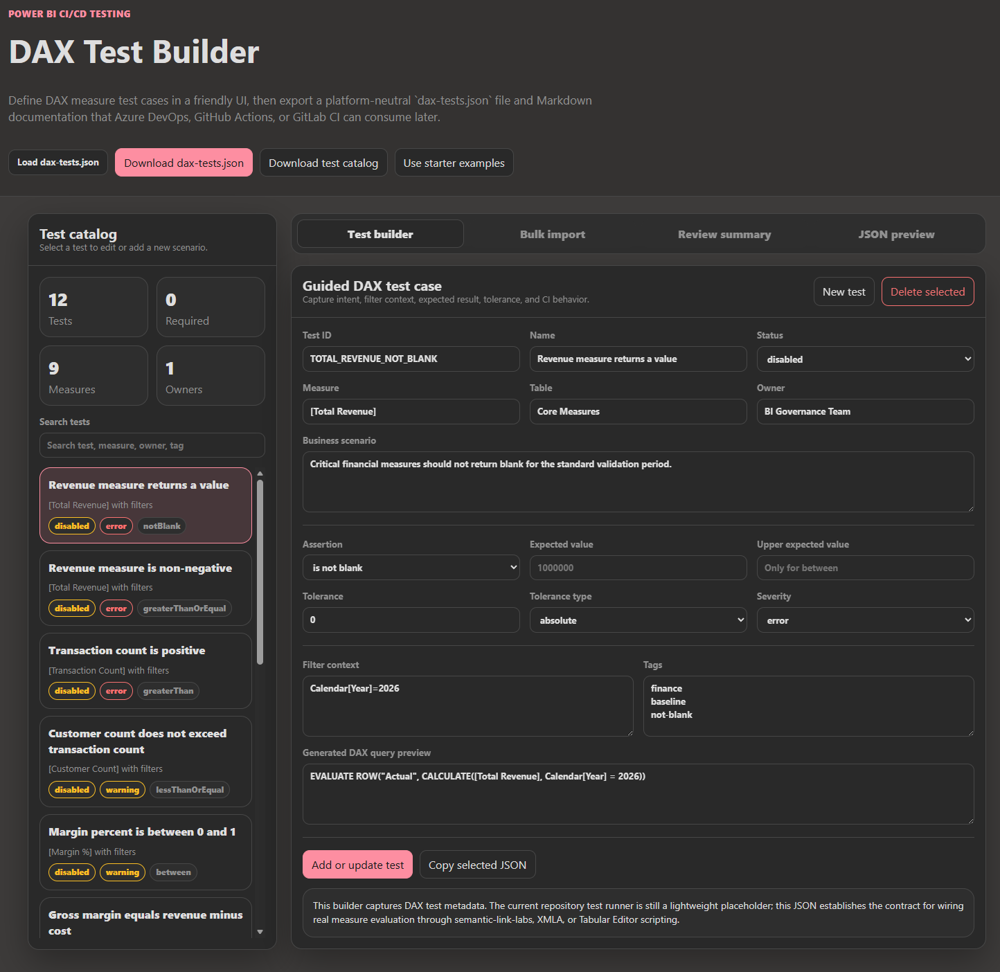

Governed quality gates
Generate and tune report and semantic model quality rules that run in CI across Azure DevOps, GitHub Actions, and GitLab.
A practical accelerator for large-scale Power BI and Fabric reporting teams that need Git-based delivery, automated validation, quality gates, deployment contracts, and no-code governance tooling.

PBIP makes Power BI assets source-controllable, but enterprise delivery needs more than files in Git. This accelerator adds the standards, tests, manifests, scanners, and pipelines that make reporting solutions easier to review, govern, deploy, and support.
Generate and tune report and semantic model quality rules that run in CI across Azure DevOps, GitHub Actions, and GitLab.
Use the Deployment Manifest Builder to explain owners, artifacts, environments, parameters, gates, approvals, exceptions, and rollback.
Use readiness scans and DAX test metadata so report creators and reviewers understand what is ready before a pull request is opened.
Each tool is a static HTML page that can be opened locally. The tools generate JSON and Markdown artifacts that fit naturally into Git and CI/CD workflows.
Choose policy profiles and generate report and dataset quality rules without hand-editing JSON.
Create and tune individual PBI Inspector report rules and Tabular Editor BPA dataset rules.
Define measure-level DAX test metadata consumed by the pipeline runner for JUnit reporting.
Scan an existing PBIP folder or manually create a readable deployment manifest covering environments, parameters, approvals, and rollback.
Scan a PBIP repo or project folder before PR to catch missing structure, governance assets, CI wiring, and hygiene issues.
A single HTML page that explains the workflow, audiences, generated artifacts, and links to every tool.
The tools are designed to be used in a repeatable order from policy definition through pull request readiness.
Choose the enterprise posture and generate rule files.
Adjust individual rules, thresholds, and custom logic.
Capture DAX test metadata for critical measures.
Create the deployment manifest for environments and approvals.
Generate a readiness report before review.
Use these visuals in documentation, enablement sessions, internal demos, or LinkedIn-style announcements.




The accelerator keeps outputs plain and source-controllable so Azure DevOps, GitHub Actions, and GitLab CI can consume the same metadata.
Rules-Report.jsonPBI Inspector report quality rules.Rules-Dataset.jsonTabular Editor BPA dataset rules.dax-tests.jsonMeasure-level DAX test metadata.deployment-manifest.jsonSolution ownership, environments, parameters, approvals, and rollback.enterprise-policy-profile.jsonReusable policy posture and governance settings.PBIP-Readiness-Report.mdPR-ready structure and governance readiness summary.